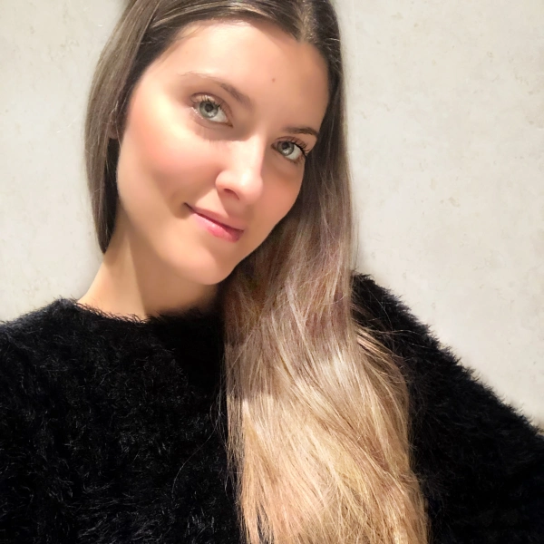

Amarilis Moldes

Summary
I am a hardworking and creative person. Willing to learn, share my skills and enjoy with every work I have to accomplish. I love working with colleges, it is so enriching.
Education
- Certificate in Full-Stack Web Developer (2025)
- University Master in Teachers from Compulsory Secondary Education (2020-2021)
- Bachelor of Science in Nursing (2009-2012)
- Erasmus Scholarship in Denmark (2012)
- MEC Scholarship in Canada (2011)
- IVAJ Scholarship in Ireland (2008)
Work Experience
- Municipal assistant in Valencia City Hall, Department of Social Services (2023-Present)
- European Funs Acquisition and Management Technician (2023)
- Administrative and Services Assistant in Instituto de Conservación, Restauración e Investigación, Valencia (IVCR+i) (2020-2022)
- Administrative Assistant in Dirección Territorial Valencia
- Nurse in Assisted Reproduction - Fertility Clinic EVA, Valencia (2017-2020)
- Adimnistrative and Recepcionist in Aesthetic and Surgery Center in Valencia
- Nurse Specialist in Hair Transplant- Freitas Clinic, Valencia (2014-2015)
- Nurse in Klinik Bavaria Kreischa, Dresden Germany
- Event Hostess in Palau de les Arts Reina Sofía, Valencia (2009-2012)
Languages
- Spasnish, native
- English, Advanced
- German, Intermidate
- Valencian, Advanced
Skills
- Creativity
- Time Management
- Communication/Active Listening
- Teamwork
- Problem-Solving
- Adaptability
Awards and Certifications
- Erasmus Scholarship in Denmark (2012)
- MEC Scholarship in Canada (2011)
- IVAJ Scholarship in Ireland (2008)
- Advanced Certitication in English
- B2 Certificate in English
- C1-Mitjà in Valenciano
Other
Contact
Hobbies